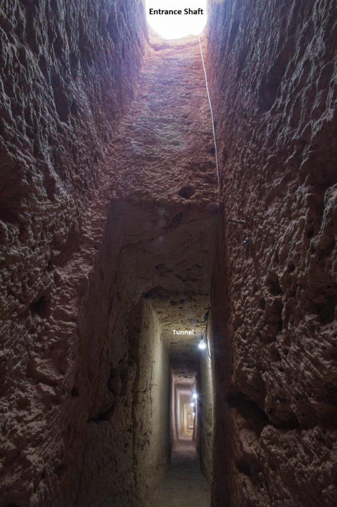
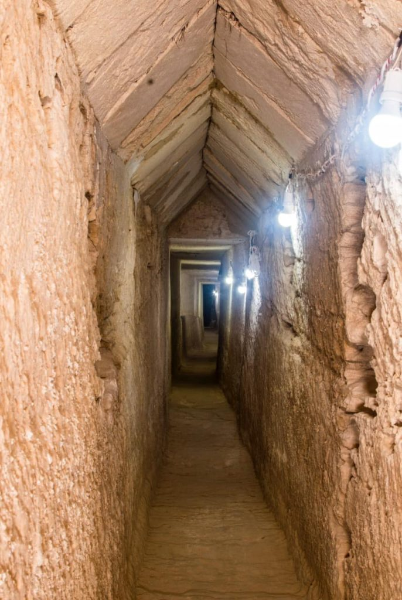
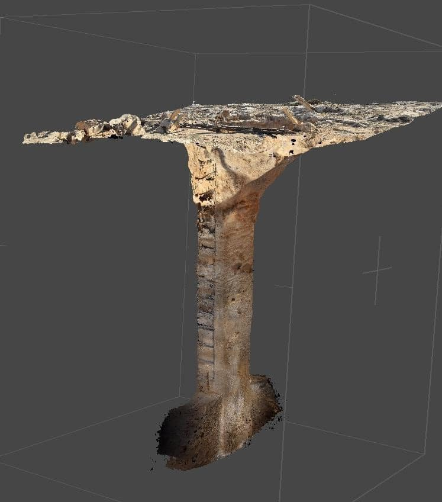
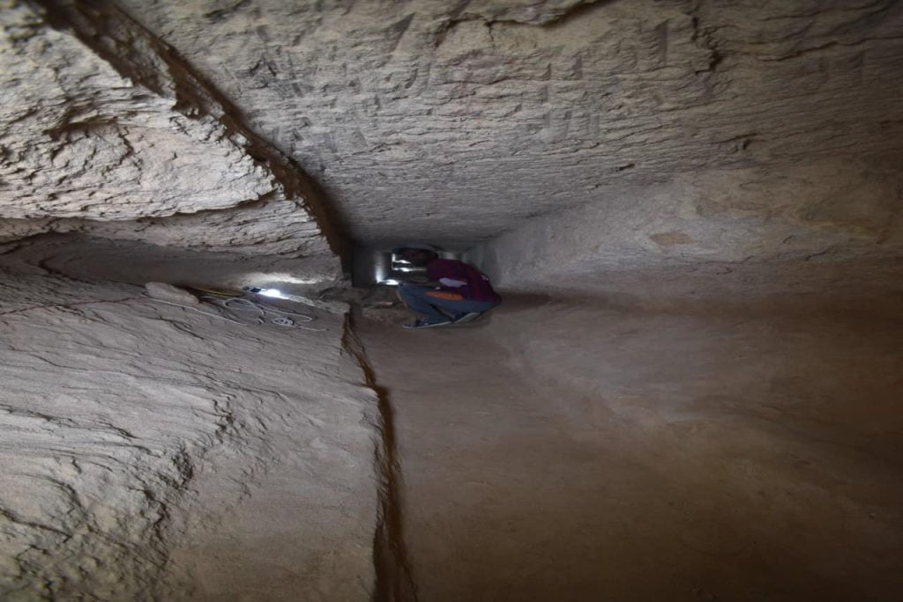
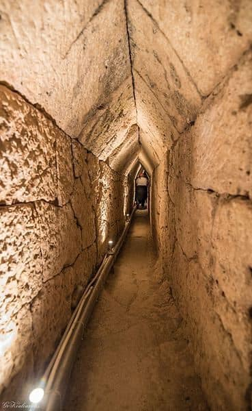
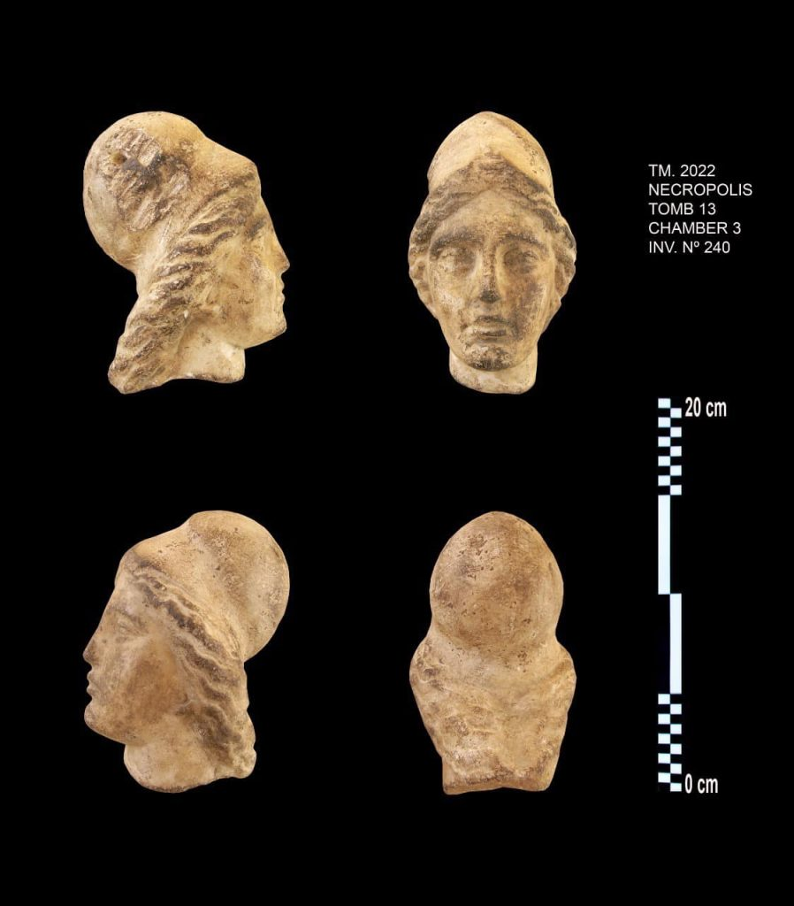
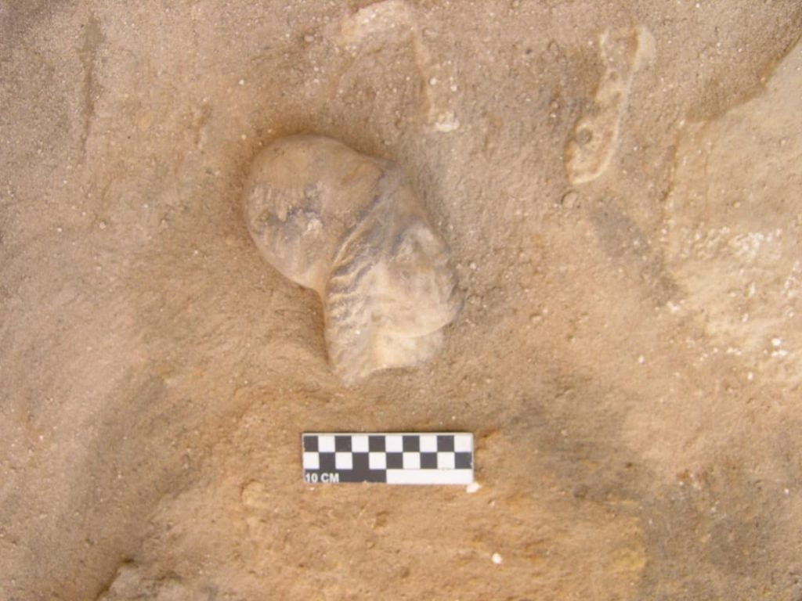

အီဂျစ်နိုင်ငံက ရှေးဟောင်း သုတေသန ပညာရှင် တွေဟာ ရှေးဟောင်း အီဂျစ် နတ်ဘုရားကျောင်းကြီး တစ်ခုရဲ့ အောက်မှာ အလွန် ရှည်လျားတဲ့ ဥမင်လှိုဏ်ခေါင်း ကြီး တစ်ခုကို ရှာဖွေ တွေ့ရှိ ခဲ့ကြပါတယ်။
အခု လှိုဏ်ခေါင်းကို အီဂျစ်နိုင်ငံ အလက်ဇန်းဒရီးယား မြို့ (Alexandria) ရဲ့ အနောက်ပိုင်းက ရှေးဟောင်း မြို့တော် တစ်ခုဖြစ်တဲ့ တာပိုစီရီ မက်ဂ်နာ (Taposiris Magna) မြို့က ရှေးဟောင်း နတ်ဘုရားကျောင်း တစ်ခုရဲ့ အောက်မှာ ရှာဖွေ တွေ့ရှိခဲ့ ကြတာ ဖြစ်ပါတယ်။

အခု ရှာဖွေ တွေ့ရှိခဲ့တဲ့ ရှေးဟောင်း လှိုဏ်ခေါင်းကြီးဟာ အရှည် ၄,၂၈၁ ပေ (၁,၃၀၅ မီတာ) ရှည်ပါတယ်။ အခု လှိုဏ်ခေါင်းကြီးကို အီဂျစ် နဲ့ ဒိုမီနီကန် ရှေးဟောင်း ပညာရှင်တွေက ရှာဖွေ တွေ့ရှိခဲ့ ကြတာ ဖြစ်ပါတယ်။
ရှေးအီဂျစ်တွေ တည်ဆောက်ခဲ့တဲ့ ဒီ လှိုဏ်ခေါင်း ကြီးဟာ အမြင့်အားဖြင့် ၆.၆ ပေ အမြင့် ရှိပါတယ်။ ဒီလှိုင်ခေါင်း ကြီးကို မြေအောက် အနက် ၆၅ ပေ ခန့်မှာ တူးဖေါ် တည်ဆောက် ခဲ့ကြတာ ဖြစ်ပါတယ်။

ဒီ လှိုဏ်ခေါင်းဟာ ဂရိ နိုင်ငံက ယူပါလီနို ဥမင်လှိုဏ်ခေါင်း (Eupalinos Tunnel in Greece) နဲ့ ပုံစံတူ တည်ဆောက် ထားခဲ့တာလို့ ပညာရှင် တွေက ဆိုပါတယ်။ ဂရိနိုင်ငံ အေဂျီယန် ပင်လယ် (Aegean Sea) အရှေ့ပိုင်းက ဆာမို့စ် (Samos Island) ကျွန်းမှာ တည်ဆောက်ခဲ့တဲ့ ဒီ ယူပါလီနို လှိုဏ်ခေါင်းဟာ ရှေးဟောင်းခေတ် အင်ဂျင်နီယာ ပညာရပ်ရဲ့ အောင်မြင်မှုကြီး တစ်ရပ်အဖြစ် ပညာရှင် တွေက သတ်မှတ် ထားကြတာ ဖြစ်ပါတယ်။

ဒီ လှိုဏ်ခေါင်းကြီးကို ခရစ် မပေါ်မီ ဘီစီ ၃၀၄ ခုနှစ်ကနေ ဘီစီ ၃၀ အကြား စိုးစံခဲ့တဲ့ တိုလမီ မင်းဆက်တွေ ကာလမှာ တည်ဆောက် ခဲ့မယ်လို့ ယူဆ ကြပါတယ်။ ဒီ တိုလမီ မင်းဆက် (Ptolemaic dynasty) ဆိုတာ မဟာ အလက်ဇန်းဒါး ဘုရင်ကြီး (Alexander the Great) ရဲ့ ဂရိ စစ်ဗိုလ်ချုပ်ကြီး တစ်ယောက်ကနေ ဆင်းသက်လာတဲ့ မင်းဆက် ဖြစ်ပါတယ်။ (အီဂျစ်သမိုင်းမှာ နာမည်ကျော်တဲ့ ကလီယို ပါထရာ ဘုရင်မဟာ ဒီ ဂရိ တိုလမီ မင်းဆက်က ဘုရင်မ တစ်ပါး ဖြစ်ပါတယ်။)
အခု ရှာဖွေ တွေ့ရှိတဲ့ လှိုဏ်ခေါင်း ကြီးဟာ ရှေး အီဂျစ်ခေတ်က မြို့လူထု အတွက် သောက်ရေ ဖြန့်ဝေတဲ့ လှုဏ်ခေါင်းကြီး ဖြစ်မယ်လို့ ပညာရှင် တွေက ယူဆကြ ပါတယ်။

အခု လှိုဏ်ခေါင်းကြီးကို ရှာဖွေ တွေ့ရှိခဲ့တဲ့ တာပိုစီရီ မက်ဂ်နာ နတ်ကျောင်းကြီးရဲ့ တည်ဆောက်ပုံက လဲ ရှုပ်ထွေးလှပါတယ်။ ဘုရားကျောင်း ကြီးရဲ့ အစိတ်အပိုင်း အချို့ဟာ ရေအောက်မှာ နစ်မြုပ်နေပြီး ဘုရားကျောင်း ကြီးဟာလဲမြေငလျင်ဒါဏ် ကို မကြာခန ခံခဲ့ရ တာမို့ အပျက်အစီး အများအပြား ဖြစ်ပေါ် နေပါပြီ။
ဒီ လှိုဏ်ခေါင်း အတွင်းမှာ ထူးထူးခြားခြား တွေ့ရတာ ကတော့ ဦးခေါင်းပုံ ထွင်းထုထားတဲ့ ကျောက်ရုပ်တု နှစ်ခုပဲ ဖြစ်ပါတယ်။ ဒီ အထဲက တစ်ခုက ဘုရင်တပါးရဲ့ ကျောက်ရုပ်တု ဖြစ်ပြီး နောက်တခုကတော့ အဆင့်မြင့် အရာရှိကြီး တစ်ယောက်ရဲ့ ရုပ်တု ဖြစ်မယ်လို့ ပညာရှင် တွေက ခန့်မှန်း ကြပါတယ်။ ဒါပေမယ့် သူတို့ဟာ ဘယ်သူတွေလဲဆိုတာကိုတော့ ပညာရှင်တွေ အဖြေရှာနိုင်ခြင်း မရှိ ကြပါဘူး။

ဒီ ကျောက်ရုပ် နှစ်ခုအပြင် အီဂျစ် နတ်ဘုရား တွေရဲ့ ရုပ်တုတွေနဲ့ ရှေးခေတ်သုံး ဒင်္ဂါးပြား တွေကိုလဲ ရှာဖွေ တွေ့ရှိ ခဲ့ကြပါတယ်။
ဒီ လှိုဏ်ခေါင်းကြီးကို တည်ဆောက် ခဲ့စဉ်က တာပိုစီရီ မြို့ရဲ့ လူဦးရေဟာ ၁၅,၀၀၀ နဲ့ ၂၀,၀၀၀ ကြား ရှိမယ်လို့ ပညာရှင် တွေက ခန့်မှန်း ထားကြပါတယ်။ အခု လှိုဏ်ခေါင်း တွေ့ရှိတဲ့ နတ်ဘုရား ကျောင်းဟာ အီဂျစ် နတ်ဘုရားမ အိုင်းစစ် (Isis) ရဲ့ ဘုရားကျောင်းတော် ဖြစ်ပါတယ်။ အိုင်းစစ် ဆိုတာက အီဂျစ် နတ်ဘုရား အိုစိုင်းရစ် (Osiris) ရဲ့ မိဖုရား ဖြစ်ပါတယ်။

ဒီ ဘုရားကျောင်းမှာ အရင်က တူးဖော်ခဲ့မှု တွေမှာ အီဂျစ် ဘုရင်မ သတ္တမမြောက် ကလီယို ပါထရာ (Cleopatra VII) ရဲ့ မျက်နှာနဲ့ သွန်းလုပ်ထားတဲ့ ဒင်္ဂါးပြား အများအပြားကို ရှာဖွေ တွေ့ရှိ ခဲ့ကြပါတယ်။
လက်ရှိ အချိန်မှာ တာပိုစီရီ မက်ဂ်နာ ကျောင်းတော်နဲ့ မြို့ပတ်ဝန်းကျင်ကို ဆက်လက်ပြီး တူးဖော် သုတေသန ပြုလုပ်လျှက် ရှိပါတယ်။ ဒါ့ကြောင့်လဲနောက်ထပ် သမိုင်းတန်ဖိုး ရှိတဲ့ အထောက်အထားတွေ ဆက်လက် ထွက်ပေါ်လာအုံးမယ်လို့ ပညာရှင် တွေက မျှော်လင့် ထားကြပါတယ်။

Ref:
Vast tunnel found beneath ancient Egyptian temple | Live Science